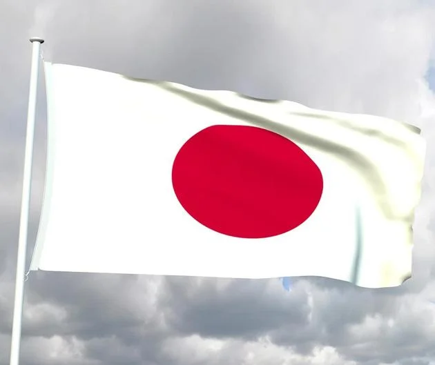

Grupo E
Espanha
Tudo sobre a Seleção Espanha em Copas do Mundo
A seleção de futebol masculino da Espanha é conhecida como La Furia Roja (A Fúria Vermelha) ou apenas
La Roja (A Vermelha).
Apesar de ter fortes equipes a seleção espanhola foi campeã do mundo apenas em 2010.
A seleção da Espanha venceu três edições da Eurocopa (1964, 2008 e 2012).
Dentre eles alguns jogadores se destacam são eles: Considerado por muitos o melhor jogador da Espanha, Xavi
Hernandez é
realmente um dos melhores meio-campistas a já jogar. Junto com Iniesta, Xavi formou a espinha dorsal da
era mais gloriosa da Espanha de 2008-2012.
| Nome dos técnicos da Seleção Espanhola em Copas do Mundo |
| Ano |
Nome |
| 2010 |
Vicente Del Bosque |
| 2014 |
Vicente Del Bosque |
| 2018 |
Julen Lopetegui |
| 2022 |
Luis Henrique Matrínez García |
| Espanha na copa do mundo de 2022 |
| Data/horas |
Adversário |
Estádio |
| (23/11) ás 13hrs |
Espanha x Costa Rica ou Noza Zelândia |
Al Thumama |
| (27/11) ás 16hrs |
Espanha x Alemanha |
Al Khor |
| (01/12)ás 16hrs |
Japão x Espanha |
Internacional Khalifa |
Costa Rica x Nova Zelândia

x

Tudo sobre a Seleção Costa Rica em Copas do Mundo
A primeira participação da seleção da Costa Rica em Copas do Mundo foi em 1990. Na Copa da Itália os
costarriquenhos chegaram às
oitavas-de-final. Em 2002, 2006 e 2018 não passaram da primeira fase. Em 2014 a
Costa Rica surpreendeu chegando às quarta-de-final com uma campanha memorável.
Tudo sobre a Seleção Nova Zelândia em Copas do Mundo
A Nova Zelândia tenta a sua terceira participação na Copa do Mundo – esteve em 1982 e 2010.
Desde que a Austrália se filiou à federação asiática, os neozelandeses estiveram em todas as
repescagens mundiais. Venceu o Bahrein em 2010, mas perdeu para o México em 2014, e para o Peru em
2017. um grande jogador do time é Keylor Antonio Navas Gamboa, mais conhecido como Keylor
Navas,além deles tem também
Bryan Jafet Ruiz González (San José, 18 de agosto de 1985) que é futebolista costarriquenho que atua como
meio-campista.
Joel Nathaniel Campbell Samuels, ou simplesmente Joel Campbell atua como atacante
| Nome dos técnicos da Seleção Costa Rica em Copas do Mundo |
| Ano |
Nome |
2014 |
Jorge Luis Pinto |
| 2018 |
Óscar Ramírez |
| 2022 |
Óscar Ramirez |
| Nome dos técnicos da Seleção Nova Zelândia em Copas do Mundo |
| Ano |
Nome |
| 2010 |
Ricki Herbert |
| 2014 |
Ricki Herbert |
| 2018 |
Anthony Hudson |
| 2022 |
Ricki Herbert |
| Costa Rica ou Nova Zelândia na copa do mundo de 2022 |
| Data/horas |
Adversário |
Estádio |
| (23/11) ás 13hrs |
Espanha x Costa Rica ou Noza Zelândia |
Al Thumama |
| (27/11) ás 07hrs |
Japão x Costa Rica ou Nova Zelândia |
Al Rayyan |
| (01/12)ás 16hrs |
Costa Rica ou Nova Zelândia x Alemanha |
Al Khor |
Alemanha
Tudo sobre a Seleção Alemanha em Copas do Mundo
As duas nações que mais vezes chegaram à final de uma Copa do Mundo são Alemanha e Brasil. Os alemães
participaram oito vezes da final – ganharam em 1954, 1974, 1990 e 2014 e foram derrotados em 1966, 1982,
1986 e 2002. Dentre eles se destacam Lukas Podolski e Philipp Lahm dentro do futebol moderno,
Bastian se consolidou na história do futebol alemão após sua performance heróica na final da Copa do
Mundo de 2014,
Considerado como um dos melhores jogadores da Alemanha, Fritz agora é nome de um prêmio, dado ao melhor
jogador alemão,
vencedores anteriores incluíram os de Mario Gotze e Toni Kroos.
Excepcional goleador da Alemanha, não há muito que Muller não tenha alcançado. Com 68 gols em 62 jogos em
nível internacional,
os atacantes do dia moderno na Alemanha sempre serão comparados com o “The Bomber”.
| Nome dos técnicos da Seleção da Alemanha em Copas do Mundo |
| Ano |
Nome |
| 2010 |
Joachim Löw |
| 2014 |
Joachim Löw |
| 2018 |
Joachim Löw |
| 2022 |
Hansi-Flick |
| Alemanha na copa do mundo de 2022 |
| Data/horas |
Adversário |
Estádio |
| (23/11) ás 10hrs |
Alemanha x Japão |
Internacional Khalifa |
| (27/11) ás 16hrs |
Espanha x Alemanha |
Al Khor |
| (01/12)ás 16hrs |
Costa Rica ou Nova Zelândia x Alemanha |
Al Khor |
Japão

Tudo sobre a Seleção do Japão em Copas do Mundo
Desde a sua primeira participação em 1998, o Japão participa de todas as edições da Copa do Mundo. Os
melhores desempenhos da seleção japonesa foram em 2002, quando o Japão era uma das sedes, em 2010 e em 2018.
Nestas edições da Copa do Mundo a seleção do japão chegou às oitavas-de-final.
O Hidetoshi Nakata, que para muitos é o melhor jogador japonês de todos os tempos,
também disputou uma Olimpíada bem abaixo da idade (tinha 19 em Atlanta-96), mas não era protagonista do time.
| Nome dos técnicos da Seleção do Japão em Copas do Mundo |
| Ano |
Nome |
| 2010 |
Alberto Zaccheroni |
| 2014 |
Alberto Zaccheroni |
| 2018 |
Akira Nishino |
| 2022 |
Ivica Osim |
| Japão na copa do mundo de 2022 |
| Data/horas |
Adversário |
Estádio |
| (23/11) ás 10hrs |
Alemanha x Japão |
Internacional Khalifa |
| (27/11) ás 07hrs |
Japão x Costa Rica ou Noza Zelândia |
Al Rayyan |
| (01/12)ás 16hrs |
Japão x Espanha |
Internacional Khalifa |